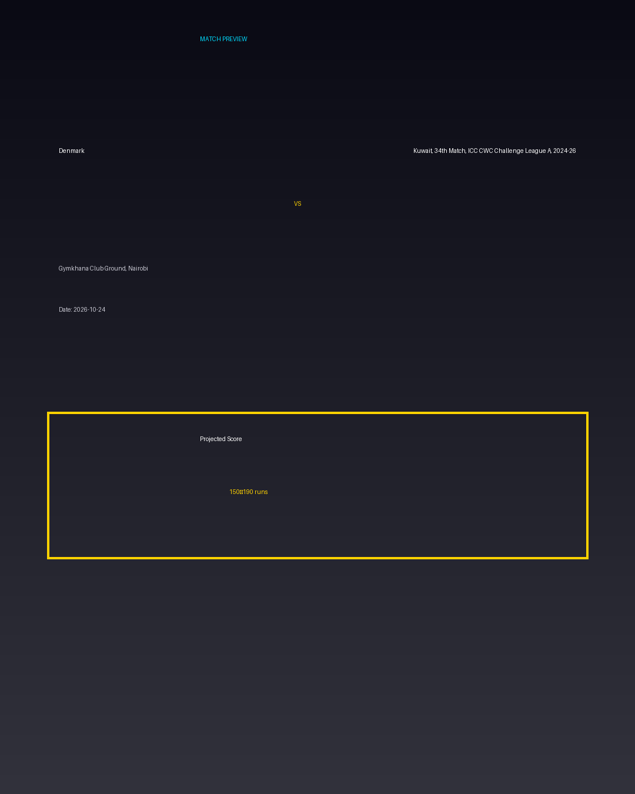

Denmark vs Kuwait, 34th Match, ICC CWC Challenge League A, 2024-26
Date: 2026-10-24
Venue: Gymkhana Club Ground, Nairobi


Form Guide
Denmark: 🟩 🟥 🟩 🟩 🟥
Kuwait, 34th Match, ICC CWC Challenge League A, 2024-26: 🟥 🟩 🟥 🟥 🟩
Pitch Report
Balanced wicket with moderate scoring conditions.
Projected Score
150–190 runs
Key Players
- Denmark Key Batter — Batsman
- Denmark Strike Bowler — Bowler
- Kuwait, 34th Match, ICC CWC Challenge League A, 2024-26 Key Batter — Batsman
- Kuwait, 34th Match, ICC CWC Challenge League A, 2024-26 Strike Bowler — Bowler
Advanced Win Probability
Denmark: 64.3%
Kuwait, 34th Match, ICC CWC Challenge League A, 2024-26: 35.7%
AI Match Prediction
Based on venue conditions, a projected scoring range of 150–190 runs, recent form (with Denmark appearing slightly stronger), and the pitch profile ('Balanced wicket with moderate scoring conditions.'), this matchup appears to present Denmark entering as clear favorites. Early momentum and top-order execution will likely determine the winner.
